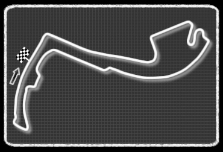
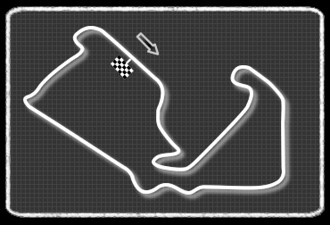
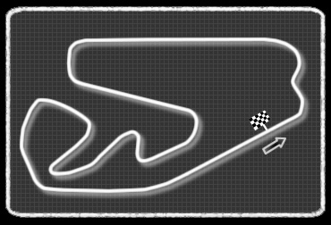
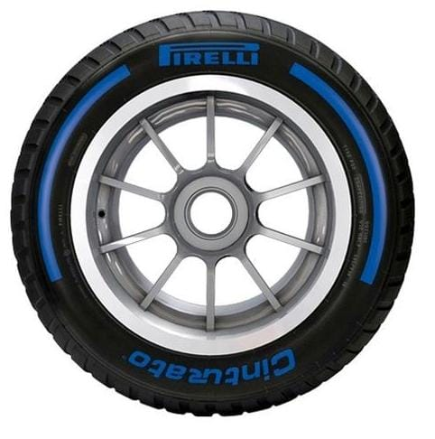

La Fórmula 1, abreviada como F1, es el pináculo del automovilismo deportivo y una de las competiciones más prestigiosas del mundo.
Su historia se remonta a la década de 1950, cuando la Federación Internacional del Automóvil (FIA) estableció un conjunto de regulaciones para carreras de automóviles de un solo asiento, conocidas como Fórmula 1.
La primera carrera oficial de Fórmula 1 se celebró en 1950 en el circuito de Silverstone en el Reino Unido, desde entonces, la Fórmula 1 ha evolucionado significativamente, pasando de carreras en circuitos improvisados en carreteras públicas, a competiciones en circuitos permanentes, especialmente diseñados para la velocidad y la seguridad.
A lo largo de los años, la Fórmula 1 ha sido testigo de numerosos cambios en regulaciones técnicas, equipos, pilotos y circuitos. Grandes leyendas como Juan Manuel Fangio, Niki Lauda, Alain Prost, Ayrton Senna, Michael Schumacher, Fernando Alonso y Lewis Hamilton han dejado su huella en la historia del deporte con emocionantes batallas en la pista y logros impresionantes, hoy en día la Fórmula 1 es un espectáculo global que se celebra en diferentes continentes y atrae a millones de espectadores en todo el mundo.
Con tecnología de vanguardia, velocidad vertiginosa y una pasión inigualable, la Fórmula 1 continúa siendo el pináculo del automovilismo deportivo y una de las competiciones más emocionantes del planeta.
El primer campeón del mundo fue Giuseppe Farina, al volante de un Alfa Romeo. Ferrari apareció en la segunda carrera, en Mónaco, y tiene la distinción de ser el único fabricante que ha competido a lo largo de toda la historia de este deporte.
PILOTOS ICÓNICOS:
Michael Schumacher
Considerado uno de los mejores pilotos de todos los tiempos, Schumacher ganó 7 campeonatos mundiales y estableció numerosos récords, incluyendo el mayor número de victorias en Grandes Premios durante su carrera.
Ayrton Senna
Legendario por su habilidad y carisma, Senna también ganó 3 campeonatos mundiales. Su trágica muerte en un accidente durante una carrera en 1994 dejó un impacto duradero en la Fórmula 1 y la seguridad en el automovilismo.
Circuitos
El calendario de carreras varia de año en año, pero generalmente incluye alrededor de 20 a 24 circuitos diferentes. Cada circuito tiene 3 sectores en donde los pilotos pueden prender el DRS. Estos circuitos estan ubicados en varios países alrededor del mundo. En la temporada 2024 de Fórmula 1, hay un total de 24 circuitos en el calendario. Este incluye una variedad de trazados icónicos y nuevos, que ofrecen diferentes desafíos tanto para los pilotos como para los equipos.
En total, hay más de 70 circuitos que han sido utilizados en la historia de la Fórmula 1 desde su inicio en 1950.
1- Sakhir, gran premio de Bahrein.
2- Jeddah Corniche Circuit, gran premio de Arabia Saudita.
3- Circuito de Albert Park, gran premio de Australia
4-Circuito Internacional de Susuka, gran premio de Japón.
5-Circuito Internacional de Shanghãi, gran premio de China.
6-Miami International Autodrome, gran premio de Miami.
7-Autódromo Enzo e Dino Ferrari, gran premio de Romaña.
8-Monte Carlo, gran premio de Mónaco.

9-Circuito de Gilles Villeneuve, gran premio de Canadá.
10-Circuito de Barcelona-Catalunya, gran premio de España.
11-Red Bull Ring, gran premio de Austria.
12-Circuito de Silverstone, gran premio de Gran Bretaña.

13-Circuito de Hungaroring, gran premio de Hungría.
14-Circuito de Spa-Francorchamps, gran premio de Bélgica.
15-Circuit Zandvoort, gran premio de Países Bajos.
16-Autódromo Nacional de Monza, gran premio de Italia.
17-Circuito Urbano de Bakú, gran premio de Azerbaiyán.
18-Circuito Urbano de Marina Bay, gran premio de Singapur.
19-Circuito de las Américas, gran premio de Estados Unidos.
20-Autódromo hermanos Rodríguez, gran premio de México .
21-Autódromo José Carlos Pace (Interlagos), gran premio de Brasil.

22-Las Vegas Street Circuit, gran premio de Las Vegas.
23-Losail International Circuit, gran premio de Qatar.
24-Circuito de Yas Marina, gran premio de Abu Dhabi.
Equipos y pilotos
Los equipos más exitosos en la Fórmula 1 incluyen a Ferrari, con 16 campeonatos de constructores y Mercedes, que ha dominado en la última década con 8 títulos consecutivos. En cuanto a pilotos icónicos, Michael Schumacher y Lewis Hamilton son destacados, Schumacher tiene 7 campeonatos mundiales, mientras que Hamilton ha igualado esa cifra y posee el récord de más victorias en la historia de la F1, con más de 100 triunfos, ambos han dejado una huella imborrable en el deporte.
Actualmente la parrilla se compone de 20 pilotos, cada equipo tiene 2 pilotos principales y 2 pilotos de reserva, estos son:
1-Oracle Red Bull Racing:
Sus pilotos son: Max Verstappen (Países Bajos) y Sergio Pérez (México)
2- Mercedes-AMG Petronas Formula One Team:
Lewis Hamilton (Reino Unido) y George Russell (Reino Unido)
3- Escuderia Ferrari:
Charles Leclerc (Mónaco) y Carlos Sainz (España)
4-McLaren Formula 1 Team:
Lando Norris (Reino Unido) y Oscar Piastri (Australia)
7- Aston Martin Aramco Formula One Team:
Fernando Alonso (España) y Lance Stroll (Canadá)
5-BWT Alpine F1 Team:
Pierre Gasly (Francia) y Esteban Ocon (Francia
6-Williams Racing:
Logan Sargeant (Estados Unidos) y Alexander Albon (Tailandia)
8-Visa Cash App RB Formula One Team:
Daniel Ricciardo (Australia) y Yuki Tsunoda (Japón)
10-MoneyGram Haas F1 Team:
Kevin Magnussen (Dinamarca) y Nico Hülkenberg (Alemania)
----------------------------------------
----------------------------------------
9-Stake F1 Team Kick Sauber:
Guanyu Zhou (China) y Valtteri Bottas (Finlandia)
Navigate with arrow keys
Neumáticos
Tipos de neumaticos
Neumáticos lisos o slicks (para pistas secas):
C1-DUROS
son los que duran más en una carrera pero el auto no anda tan rápido como con los otros pero estos pueden llegar a durar entre 25 y 30 vueltas.
C2-MEDIOS
Estos tienen una duración intermedia ya que no tienen tanto agarre como los blandos. Estos duran entre 20 y 28 vueltas.
C3-BLANDOS
Estos tiene menos duración y en donde el carro puede ir a mayor velocidad.
Este neumático dura entre 15-18 vueltas.
Neumáticos de lluvia (intermedios):
Estos sirven para pistas húmedas, pero sin charcos de agua. Estos duran hasta que la pista está secas y se pueden poner slicks.

Sirven para fuertes precipitaciones cuando la pista está mojada.
estos neumáticos no se ocupan de forma recurrente en las carreras.
¿CÓMO SON?
Los neumáticos en la Fórmula 1 es algo crucial ya que influyen el rendimiento como la estrategia y la seguridad de los autos. Pirelli es el proveedor exclusivo de neumáticos para la F1 desde 2011. En cada carrera los monoplazas cambian de neumáticos entre 1-3 veces.
¿CUÁNTOS EXISTEN?
Existen cinco tipos de neumáticos donde cada uno tiene una función diferente variando el clima y las pistas. De estos, tres neumáticos son para pista seca y los otros dos para pistas mojadas.
Banderas más importantes en la Formula 1
1. Bandera de cuadros
Significado: Fin de la carrera.
Uso: Se muestra al piloto que cruza la línea de meta para indicar que ha terminado la carrera. También se utiliza al final de una sesión de clasificación.
2. Bandera amarilla
Significado: Peligro en la pista.
Uso: Advierte a los pilotos sobre un incidente, como un accidente o un vehículo detenido. Los pilotos deben reducir la velocidad, no adelantar y estar preparados para cambios en la situación./h5>
3. Bandera roja
Significado: Carrera detenida.
Uso: Se muestra cuando hay una situación peligrosa que impide continuar la carrera, como condiciones climáticas extremas o un accidente grave. Todos los pilotos deben regresar a los pits y detenerse.
4. Bandera verde
Significado: Fin del peligro.
Uso: Indica que la pista está libre de peligros y que se puede volver a competir normalmente. Se utiliza después de una bandera amarilla.
5. Bandera azul
Significado: Ceder el paso.
Uso: Evita el trafico en la pista, le va a avisar a los autos que vienen rezagados o atrasados que un pilot que va más rápido que ellos los va a rebasar, se tienen que hacer de un lado para que ese piloto pase.
6. Bandera negra
Significado: Descalificación.
Uso: Se muestra a un piloto cuando ha cometido una infracción grave o ha sido descalificado por alguna razón (como no cumplir con las reglas técnicas). El piloto debe regresar a los pits inmediatamente.